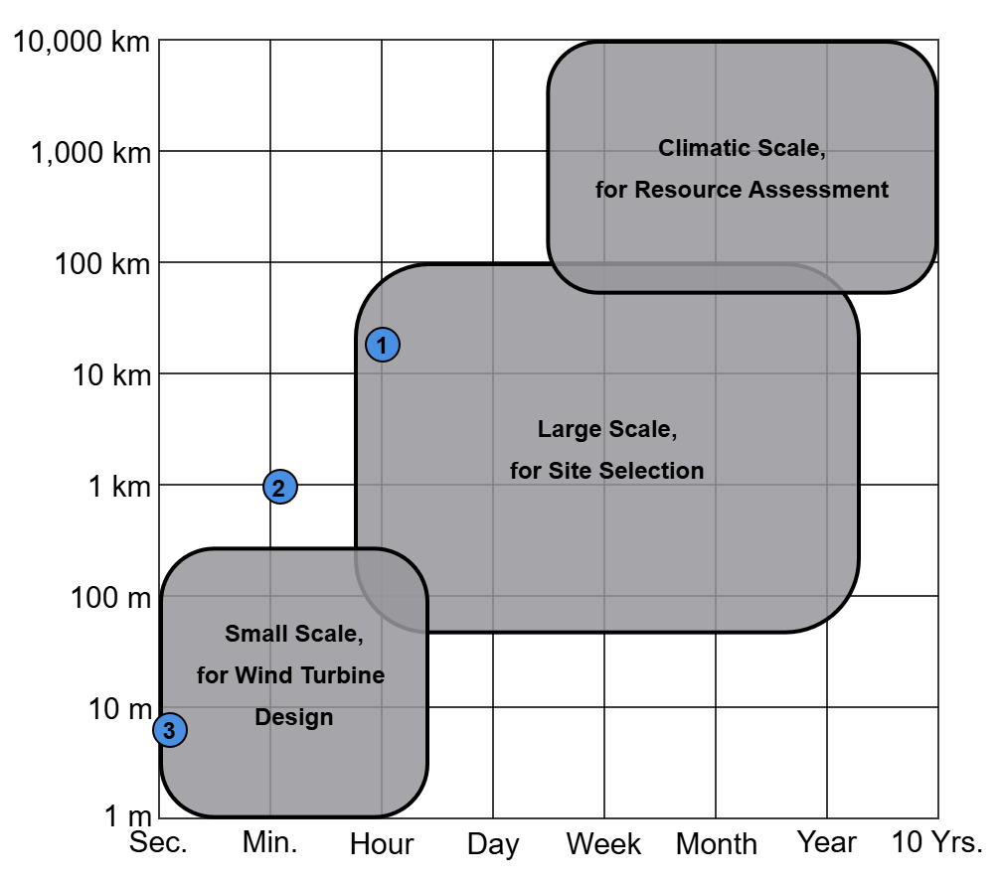
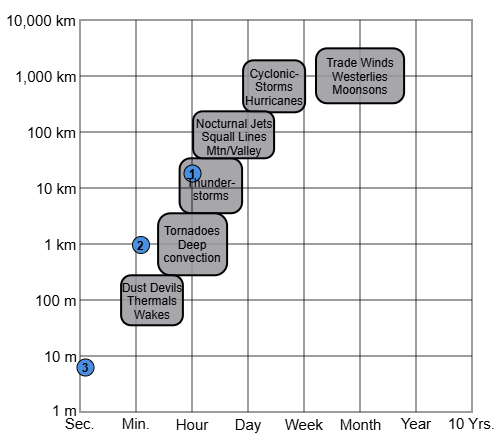

1 Introduction
The growing demand for renewable energy has positioned wind power as a key component of the global energy transition. Mexico, with its diverse geography and climate, is uniquely positioned to harness this potential. The Mexican government has committed to integrating 50% of renewable sources into its electrical mix by 2050 [1]. For the 2027-2037 period, it is projected that 88% of the installed capacity will come from clean energy, with wind energy contributing 8.65%, equivalent to approximately 3430.42 MW [2].
Mexico’s geographic location, situated between the Pacific and Atlantic Oceans, offers significant opportunities for both onshore and offshore wind energy development. Key onshore regions with high wind velocities include Oaxaca, Chiapas, Tamaulipas, Yucatan, and the Baja California Peninsula [3]. Offshore opportunities have been identified in the Yucatan Peninsula, the Gulf of Tehuantepec, and the eastern coast of Tamaulipas [4,5].
Despite Mexico’s vast wind energy potential, significant gaps remain in understanding how the multi-scale complexity of wind impacts the reliability of this renewable energy source, particularly for the country’s wind regimes. These gaps span from large-scale climatic phenomena influencing wind farm operations to small-scale fluctuations occurring within seconds, which affect the mechanical behavior of wind turbines.
Wind energy research faces three grand challenges [6]: understanding the physics of the atmosphere in regions where wind power plants operate, improving the materials and system dynamics of wind turbines, and optimizing the integration of wind farms into the electricity grid. These challenges are inherently multi-scale, requiring analysis across varying temporal and spatial dimensions due to the complex and dynamic nature of wind behavior. These scales, as applied to wind energy, are shown in Figure 1.1 and described as follows [7,8]:
Synoptic scales: Spanning hundreds of kilometers and timescales from weeks to decades. These include tropical cyclones, monsoons, and climate change. The environmental information obtained at this scale helps identify wind resource variability and aids in spatial planning.
Mesoscale: Ranging from 100 m to 100 km and from hours to years. This scale encompasses thunderstorms, high- and low-pressure systems, and mountain-valley winds. It is particularly useful for specific resource assessment and determining site suitability.
Small scales: Covering the smallest spatial and temporal scales, as meters and milliseconds. These include turbulence, eddies, and gusts, which directly impact the mechanical loads on wind turbine components and their operational efficiency.


| General description | Application | Time frequency | |
|---|---|---|---|
| 1 | Integrate wind and solar resources into the energy mix | Resource assessment | Annual to daily |
| 2 | Enhancement of reanalysis with measured data and spatial variability of wind resources | Site selection | Hourly to ten minutes |
| 3 | Dynamic analysis of an offshore wind turbine | Technology assessment | Miliseconds |
Understanding wind behavior requires the appropriate selection of spatial scale and temporal frequency considering factors interacting with the wind. For example, offshore wind turbines are influenced not only by wind but also by waves, currents, and marine conditions, which vary across different spatial and temporal scales. Similarly, onshore wind farms must account for terrain effects, surface roughness, and local weather patterns. High-resolution wind speed data is essential for capturing these interactions and providing accurate assessments of wind energy potential, turbine performance, and structural loads.
This thesis addresses three key challenges: the largest scale involves understanding the dynamics of wind and solar resources and their integration with regional electrical demand; the second analysis combines actual data from different regions with meteorological models to identify effective zones for model applications; the final contribution take advantage of the smallest scale to analyze the effect of specific site conditions over a wind turbine. Table 1.1 summarizes these challenges, which are also represented in Figure 1.1.
Wind energy research must be region-specific, as solutions are constrained by factors such as resource characteristics, electricity demand, geographic and climatic conditions, and infrastructure availability. This thesis contributes to the field by providing high-resolution data and adaptable analytical methodologies tailored to Mexico’s unique wind regimes. By equipping decision-makers with these tools, this work aims to enhance the efficiency, reliability, and long-term sustainability of wind energy integration in Mexico and beyond.
1.1 Objectives
The primary objective of this thesis is to assess how different temporal resolutions of wind speed data influence the understanding of wind energy challenges in Mexico. Specific objectives include:
Evaluating the variability of wind and solar resources in the Yucatan Peninsula and their potential to meet regional electricity demand.
Developing a methodology for enhancing the temporal resolution of reanalysis data for wind energy applications.
Analyzing the performance and technical feasibility of a floating offshore wind turbine (FOWT) in the Gulf of Tehuantepec.
1.2 Research contributions
This thesis is structured around three main contributions. First, the study evaluates the variability of offshore wind and onshore solar photovoltaic resources in the Yucatan Peninsula and their potential to meet 50% and 80% of the region’s electricity demand. Consumption patterns are analyzed at daily, weekly, and monthly timescales, while wind and solar production are estimated using ERA5 reanalysis data [9] alongside electricity demand data from “Centro Nacional de Control de la Energia” (CENACE). The findings provide insights into the optimal sizing of installed capacity and identify periods of maximum synchrony between renewable energy generation and demand.
Second, a methodology is developed to enhance the temporal resolution of wind speed time series derived from the ERA5 reanalysis dataset. By characterizing turbulent fluctuations from measured data, information is added to the hourly reanalysis to generate ten-minute time series. The methodology is validated using root mean square error (RMSE) and the Pearson Correlation Coefficient. A spatial analysis is performed to incorporate site-specific physical characteristics.
Finally, the thesis investigates the dynamic performance of a FOWT in the Gulf of Tehuantepec. Meteorological and oceanic conditions in the region are compared with those of the North Sea, and mechanical loads are simulated using high-frequency wind and wave data. The study emphasizes the critical role of sub-second resolution data in capturing dynamic interactions and assessing the structural integrity of offshore wind turbines.
1.3 Thesis outline
This chapter contextualized the challenges addressed in the thesis, emphasizing the influence of wind’s spatial and temporal scales on wind energy research. Chapter 2 defines the study areas for each problem and describes the data sources, theoretical concepts, and software used in this research. The subsequent chapters present the literature review, methodology, analysis, and results for each research contribution: Chapter 3 examines the complementarity between wind and solar energy in the Yucatan Peninsula; Chapter 4 introduces a methodology to enhance the temporal resolution of reanalysis data; and Chapter 5 evaluates the performance of a floating offshore wind turbine in the Gulf of Tehuantepec. Finally, Chapter 6 synthesizes the findings and presents the conclusions of this research.